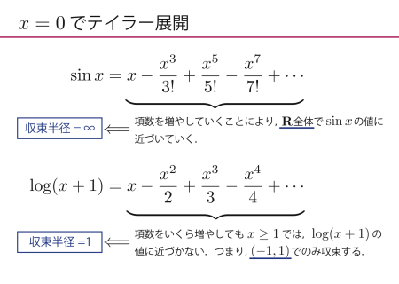
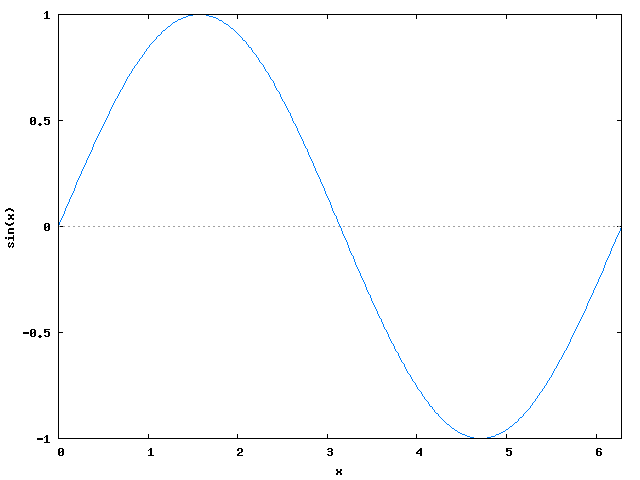
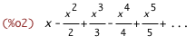
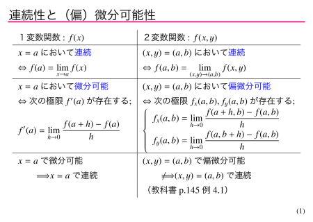
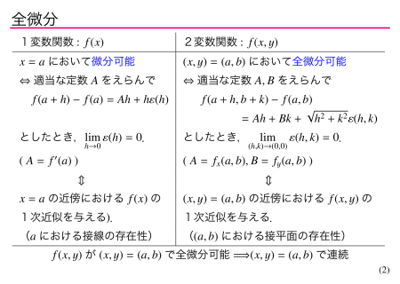
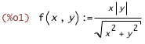
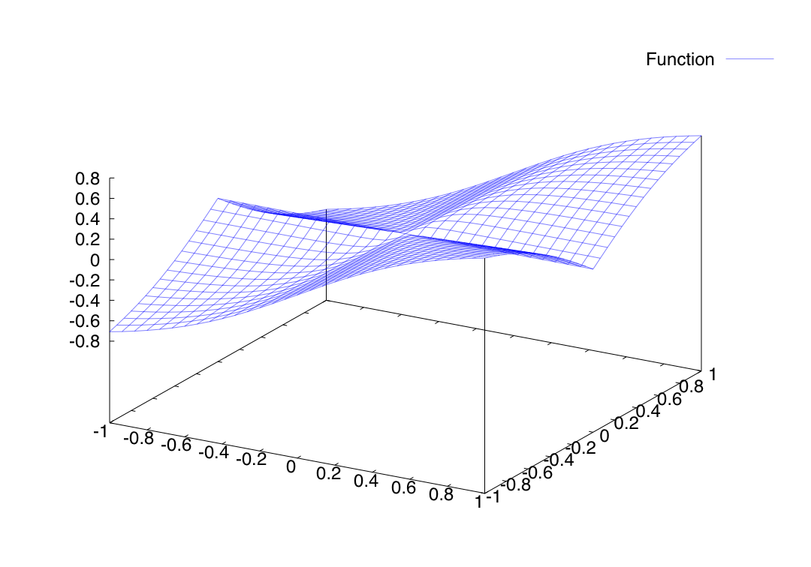
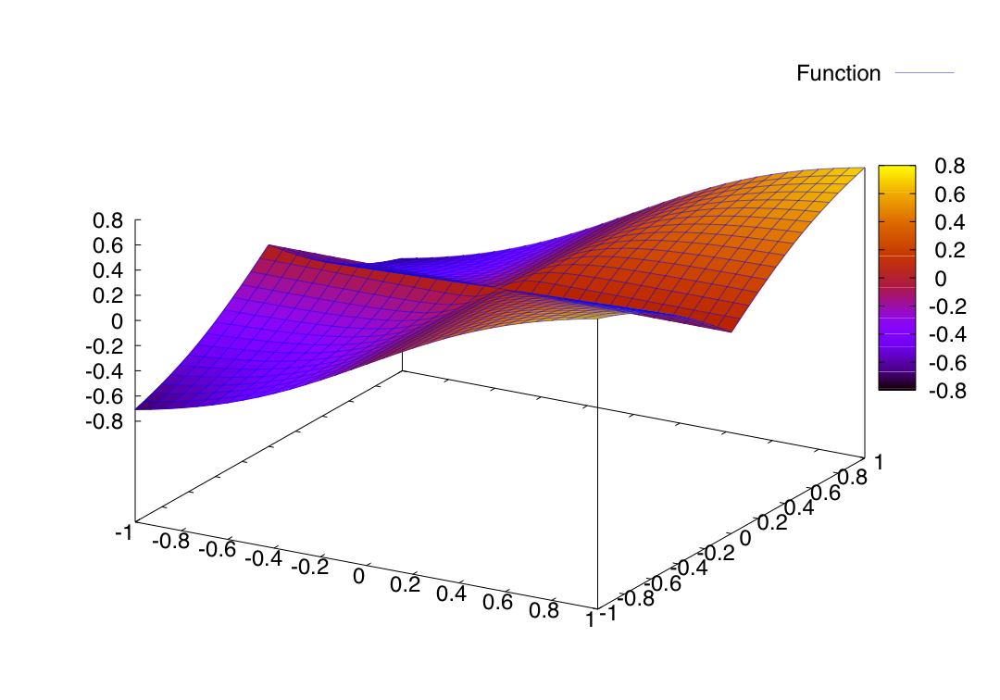

<!DOCTYPE HTML PUBLIC "-//W3C//DTD HTML 4.01//EN" "http://www.w3.org/TR/html4/strict.dtd">
<html lang="ja">
<head>
</style>
<meta http-equiv="Content-Type" content="text/html; charset=ISO-2022-JP"> 
<title>Maxima $B$K$D$$$F(B</title>
<link rel=stylesheet type="text/css" href="../hstyle.css">
</head>
<body link="#000099" alink="#000099" vlink="#990099">

  <table style="vertical-align: top;
		text-align: left; 
		width: 100%;"
	 border="0"
	 cellpadding="0"
	 cellspacing="0">
<tbody>

<tr align="left">
<td>  

<span class="ttl-j">Maxima (+gnuplot) $B$r;H$C$F$_$h$&(B</span><br>
<span class="sbttl-e">Exploring Mathematics with <i>Maxima</i> and <i>gnuplot</i></span><br>
<br>
$B$3$3$G$O!$?t<0=hM}%7%9%F%`(BMaxima$B!J$H%0%i%U:n@.%=%U%H(Bgnuplot$B!K$K$D$$$F4JC1$K@bL@$7$^$9!%(B<br><br>

<a href="maxima.html#about">Maxima $B$K$D$$$F(B</a> / 
<a href="maxima.html#taylor">$BNc!'%F%$%i!<E83+(B</a> / 
<a href="maxima.html#zenbibun">$BNc!'(B2$BJQ?t4X?t$N%0%i%U(B</a>
<hr></td>
</tr>

<tr align="left">
<td>  

<span class="sbttl-e"><a name="about">Maxima $B$H$O(B</a></span><br><br>
<a href="http://ja.wikipedia.org/wiki/Maxima">Maxima</a> $B$H$O!$(B<a href="http://ja.wikipedia.org/wiki/%E6%95%B0%E5%BC%8F%E5%87%A6%E7%90%86%E3%82%B7%E3%82%B9%E3%83%86%E3%83%A0">$B?t<0=hM}%=%U%H(B</a>$B$N0l<o$G$9!%$D$^$j!$?tCM$N7W;;$@$1$G$J$/!$?t<0<+BN$r07$&7W;;$d%0%i%U$NIA2h$J$I?t3X$K4X$o$kMM!9$J$3$H$r%3%s%T%e!<%?$rMQ$$$F7W;;!&=hM}$9$k$3$H$,$G$-$^$9!%$3$N%=%U%H$O$$$o$f$k%U%j!<%=%U%H$J$N$G!$C/$G$bL5NA$G;HMQ$9$k$3$H$,$G$-$^$9!J(B<a href="http://maxima.sourceforge.net/">$B8x<0%5%$%H(B</a>$B!K!%(B
<br>
<a href="http://ja.wikipedia.org/wiki/Gnuplot">gnuplot</a> $B$H$O!$%U%j!<$N%0%i%U:n@.%=%U%H$G$9!%(BMaxima $B$K$O%0%i%U:n@.$K4X$9$k%3%^%s%I!J(Bplot2d, plot3d $B$J$I!K$,MQ0U$5$l$F$^$9$,!$<B:]$K%0%i%U$rIA2h$7$F$$$k$N$O$3$N(B gnuplot $B$G$9!J(B<a href="http://www.gnuplot.info/">$B8x<0%5%$%H(B</a>$B!K!%(B
<br><br>

<span class="sbttl-e">Maxima $B$N%$%s%9%H!<%k$H5/F0(B</span><br><br>
Maxima$B$K$O$$$/$D$+$N<oN`$,$"$j$^$9!%3K$NItJ,!J7W;;$9$k%(%s%8%sItJ,!)!K$OF1$8$G$9$,!$304Q!J%$%s%?!<%U%'%$%9!K$,0[$J$j$^$9!%$3$3$G$O;d$,0lHV;H$$$d$9$/$FF3F~$7$d$9$$$H46$8$F$$$k!V(BwxMaxima$B!W$N%$%s%9%H!<%kJ}K!$r>R2p$7$^$9!J(B<font color="red">$BCm0U(B</font> : Windows$BHG$N%$%s%9%H!<%kJ}K!$N5-=R$K4V0c$$$,$"$j$^$7$?$N$GD{@5$7$^$7$?!K!%(B
<br><br>
$B!!(B<u>Windows $B$N>l9g(B</u><br>
<ol>
 <li><s><a href="http://sourceforge.net/project/showfiles.php?group_id=126731">$B$3$3(B</a>$B$N(BDownload$B%Z!<%8$+$i(B wxMaxima $B$N:G?7HG(B(2008.6.4$B8=:_!$(BwxMaxima-0.7.5.exe)$B$r%@%&%s%m!<%I$9$k!%(B</s><br>
<a href="http://sourceforge.net/project/showfiles.php?group_id=4933">$B$3$3(B</a>$B$N(BDownload$B%Z!<%8$+$i(B Maxima $B$N:G?7HG(B(2008.6.5$B8=:_!$(Bmaxima-5.15.0.exe)$B$r%@%&%s%m!<%I$9$k!%(B
 <li>$B%@%&%s%m!<%I$7$?<B9T%U%!%$%k$r<B9T$7!$%&%#%6!<%I$K$7$?$,$C$F%$%s%9%H!<%k$9$k!%(B
 <li>$B5/F0$9$k$K$O!$!V%9%?!<%H!W"*!V%W%m%0%i%`!W"*!V(Bmaxima-($B%P!<%8%g%sHV9f(B)$B!W$r3+$$$F!$(BwxMaxima$B$r%/%j%C%/!%(B
</ol>
$B!!(B<u>Mac OS X (Intel CPU) $B$N>l9g(B</u><br>
<ol>
 <li>X11$B$r%$%s%9%H!<%k$9$k!J(BOS$B$N%$%s%9%H!<%k%G%#%9%/$K<}O?$5$l$F$^$9!K!%(B
 <li><a href="http://www.muskmelon.jp/macosx/index.html">$B$3$3(B</a>$B$+$i;HMQ$7$F$$$k(BOS (Tiger, Leopard) $BMQ$N(BwxMaxima$B$H(Bgnuplot$B$N%P%$%J%j%Q%C%1!<%8$rE,Ev$J>l=j$K%@%&%s%m!<%I$9$k!%(B
 <li>$B%@%&%s%m!<%I$7$?%U%!%$%k$r%@%V%k%/%j%C%/$7$F2rE`$9$k!%(B
 <li>$B2rE`$7$F$G$-$?%U%!%$%k!J(BwxMaxima.app $B$H(B gnuplot.app$B!K$r%"%W%j%1!<%7%g%s%U%)%k%@$K0\F0!%(B
 <li>$B<B9T$9$k$K$O!$(BX11$B$r$"$i$+$8$a<B9T$7$F>e$G!$(BwxMaxima.app$B$r%@%V%k%/%j%C%/$7$F5/F0!J(BLeopard$B$N(BX11$B$O!$I,MW$J$H$-$K<+F0E*$K5/F0$9$k$h$&$K$J$C$F$$$^$9!K!%(B
</ol>
$B!!(B<u>Mac OS X (PPC) $B$N>l9g(B</u> : <a href="http://www.finkproject.org/">Fink</a>$B$rMQ$$$F%$%s%9%H!<%k$9$k$3$H$,$G$-$^$9!%(B
<br><br>
$B!!(B<u>Linux $B$N>l9g(B</u>
<ul>
 <li>Maxima$B$O85!9(BUnix$BMQ$N%=%U%H$J$N$G!$(BLinux$B$G$b$b$A$m$sMxMQ2DG=$G$9!%(B
 <li>$B%G%#%9%H%j%S%e!<%7%g%s$K$h$C$F$O%Q%C%1!<%8$,MQ0U$5$l$F$$$k$b$N$b$"$j$^$9!%(B
</ul>
<br>

<span class="sbttl-e">$B;29MJ88%!&%5%$%H(B</span><br><br>
Maxima$B$r;HMQ$9$k>e$G;29M$K$J$k>pJs$r$$$/$D$+5s$2$^$9!%$3$NB>$K$b(Bweb$B>e$K$OM-1W$J>pJs$,$?$/$5$s$"$j$^$9!%(Bgoogle$B$J$I$G8!:w$7$F$_$F$/$@$5$$!%(B
<br>
<ul>
 <li>MacWiki - Maxima, <a href="http://macwiki.sourceforge.jp/wiki/index.php/Maxima">http://macwiki.sourceforge.jp/wiki/index.php/Maxima</a>
 <li>$BC]Fb70(B, <a href="http://www.amazon.co.jp/%E3%81%AF%E3%81%98%E3%82%81%E3%81%A6%E3%81%AE%E6%95%B0%E5%BC%8F%E5%87%A6%E7%90%86%E3%82%BD%E3%83%95%E3%83%88-CD-ROM%E4%BB%98-%E3%83%96%E3%83%AB-%E3%83%90%E3%83%83%E3%82%AF%E3%82%B9-%E7%AB%B9%E5%86%85-%E8%96%AB/dp/4062575604">$B$O$8$a$F$N?t<0=hM}%=%U%H(B(CD-ROM$BIU(B)</a>, $B%V%k!<%P%C%/%9(B, $B9VCL<R(B.
 <li>$BCf@n5A9T(B, <a href="http://www.eonet.ne.jp/~kyo-ju/maxima.pdf">Maxima $BF~Lg%N!<%H(B 1.2.0</a>$B!%(B
 <li><a href="http://www.bekkoame.ne.jp/~ponpoko/">$B2#EDGn;K(B</a>, <a href="http://www.bekkoame.ne.jp/~ponpoko/Math/maxima/ManualBook/ManualBook.html">Maxima $B4J0W%^%K%e%"%k(B</a>$B!%(B
 <li>$B2#EDGn;K(B, <a href="http://www.bekkoame.ne.jp/~ponpoko/Math/library.html">Maxima $B$G$*3(IA$-(B</a>$B!%(B
 <li>$B2#EDGn;K(B, <a href="http://www.amazon.co.jp/%E3%81%AF%E3%81%98%E3%82%81%E3%81%A6%E3%81%AEMaxima-I%E3%83%BBO-BOOKS-%E6%A8%AA%E7%94%B0-%E5%8D%9A%E5%8F%B2/dp/4777512010">$B$O$8$a$F$N(BMaxima</a>, $B9)3X<R(B.
</ul>
<ul>
 <li>GNUPLOT$B$NBh0lJb!$(B<a href="http://lagendra.s.kanazawa-u.ac.jp/ogurisu/manuals/gnuplot-intro/">http://lagendra.s.kanazawa-u.ac.jp/ogurisu/manuals/gnuplot-intro/</a>
 <li>gnuplot tips (not so Frequently Asked Questions), <a href="http://t16web.lanl.gov/Kawano/gnuplot/">http://t16web.lanl.gov/Kawano/gnuplot/</a>
</ul>
<hr>
</td>
</tr>
<tr><td>
<br>
<span class="ttl-e"><a name=taylor>$BNc(B</a>1:
</span><span class="ttl-j">$B%F%$%i!<E83+(B</span>
<br><br>
2008$BG/(B6$B7n(B4$BF|$NHy@QJ,(BI$B1i=,$N<x6H$G!$(B<i>sin x</i> $B$H(B <i>log(x+1)</i> $B$N%F%$%i!<5i?t$,$I$N$h$&$K<}B+$7$F$$$/$N$+<B83$7$F$_$^$7$?!%(B<br>
$B!J%-!<%o!<%I!'%F%$%i!<E83+!$%F%$%i!<5i?t!$<}B+H>7B!K(B<br><br>
<div align=center><a href="./c12/slide1-taylor.pdf"></a></div>
<br>
<span class="sbttl-e">$B;HMQ$7$?%3%^%s%I(B</span>
<ul>
 <li> plot2d : $B0lJQ?t4X?t$NJ?LL%0%i%U$rIA$/!%(B<br>
<span class="ne">$BNc!'(B</span> <i>y=sin x</i> $B$N%0%i%U$r(B <i>x</i> $B$r(B 0 $B$+$i(B 2$B&P$NHO0O$GIA$/!%(B<br><br>
<span class="prompt">(%i1)</span> <span class="input">plot2d(sin(x),[x,0,2*%pi])</span><br>
<div style="text-lign: center;"></div>
 <li> taylor : $B%F%$%i!<5i?t$N7W;;(B<br>
<span class="ne">$BNc!'(B</span> $B4X?t(B <i>f(x)=log(x+1)</i> $B$r(B <i>x=0</i> $B$G%F%$%i!<E83+$7!$(B5$B<!$N9`$^$G=PNO$9$k!%(B<br><br>
<span class="prompt">(%i2)</span> <span class="input">taylor(log(x+1), x, 0, 5)</span><br>

</ul>
<br>
<span class="sbttl-e">$B2]Bj(B</span>
$B!!(B<i>f(x)=log(x+1)</i> $B$r(B <i>x=0</i> $B0J30$NE@$K4X$7$F%F%$%i!<E83+$7$?$H$-!$$=$N<}B+H>7B$O$I$&$J$k$+!)(B<br><br>
</td></tr>
<tr>
<td>
<hr>
<br>
<span class="ttl-e"><a name=zenbibun>$BNc(B</a>2:
</span><span class="ttl-j">2$BJQ?t4X?t$N%0%i%U(B</span>
<br><br>
2008$BG/(B9$B7n(B10$BF|$NHy@QJ,(BII$B1i=,$N<x6H$G!$(B2$BJQ?t4X?t$NHyJ,!JJPHyJ,$HA4HyJ,!K$K$D$$$F2r@b$7$^$7$?!%A4HyJ,IT2DG=$J4X?t$NNc$H$7$F!$(B<a href="./c12/exC2-06-0910.pdf">$B2]Bj(B</a>$B$G=P$F$/$k(B2$BJQ?t4X?t$N%0%i%U$rIA$$$F$_$^$7$?!%(B<br><br>
<div align=center><a href="./c12/slide2-totD.pdf"></a><a href="./c12/slide2-totD.pdf"></a></div>
<br>
<span class="sbttl-e">$B;HMQ$7$?%3%^%s%I(B</span>
<ul>
 <li> plot3d : 2$BJQ?t4X?t$N%0%i%U$rIA2h$9$k!%(B<br><br>
<span class="prompt">(%i1)</span> <span class="input">f(x,y):=x*abs(y)/sqrt(x^2+y^2)</span><br>
<br><br>
<span class="prompt">(%i2)</span> <span class="input">plot3d(f(x,y),[x,-1,1],[y,-1,1])</span><br>
<a href="./maxima_ex2/fig2.png"></a><br>
<span class="prompt">(%i3)</span> <span class="input">plot3d(f(x,y),[x,-1,1],[y,-1,1], [gnuplot_pm3d,true])</span><br>
<a href="./maxima_ex2/fig3.png"></a>
<hr>
<div style="text-lign: right;"><a href="./c12-ex.html">$BLa$k(B</a>
<span class="e">Back</span></div></td>
</tr>
</tbody>
</table>
</body>
</html>
